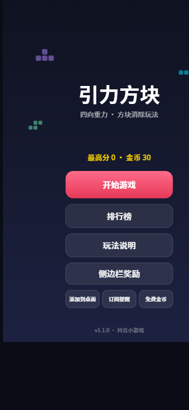
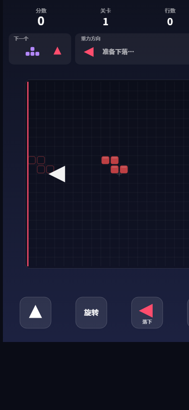
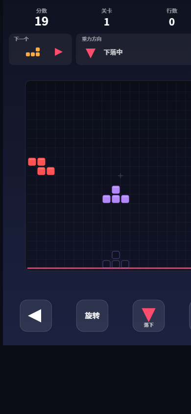
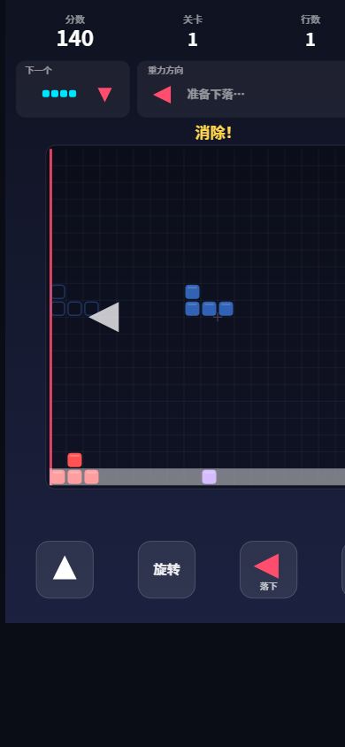
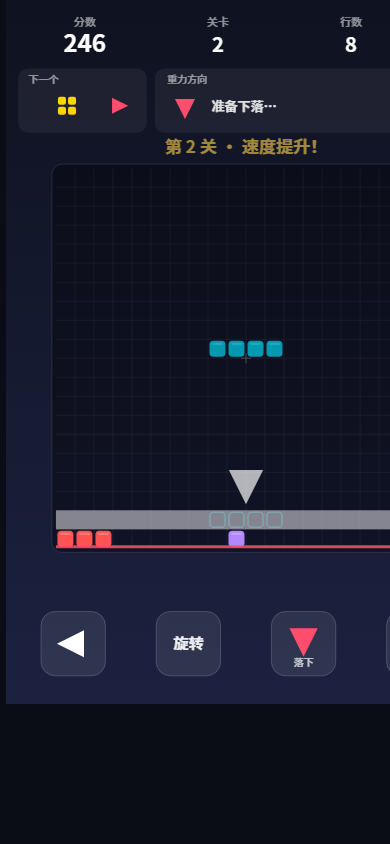
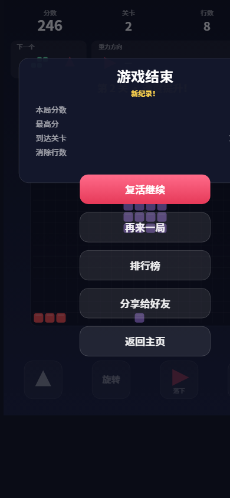
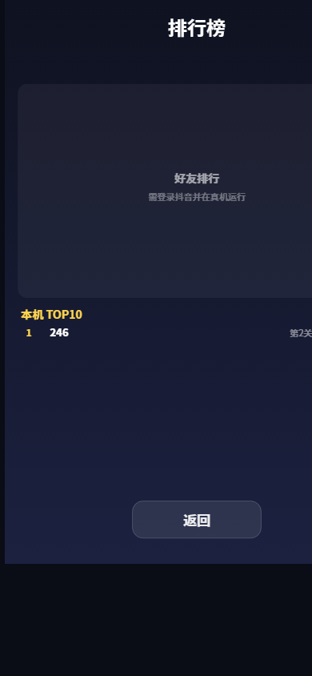

版本号：V1.0
| 软件全称 | 引力方块游戏软件 |
|---|---|
| 软件简称 | 引力方块 |
| 版本号 | V1.0 |
| 著作权人 | ＿＿＿＿＿＿＿＿（以申请表填写为准） |
| 开发方式 | 独立开发 |
| 开发完成日期 | 2026 年 9 月（以申请表填写为准） |
| 编程语言 | JavaScript |
| 源程序量 | 约 2500 行 |
| 软件分类 | 应用软件 · 休闲益智类方块消除小游戏 |
| 运行环境 | Android / iOS 智能手机上的抖音 App 及其小游戏运行环境 |
| 开发环境 | Windows 10/11，抖音开发者工具，Node.js 18+ |
《引力方块》是一款休闲益智类方块消除小游戏软件，无剧情与角色设定，场景为一个 20×20 的方格棋盘。方块从棋盘中心生成，下落方向在上、下、左、右四个方向中随机产生；正式下落前以箭头提示方块类型与方向，重力一侧的棋盘边缘高亮显示。玩家点击屏幕按钮或使用点按、滑动手势，控制方块移动、旋转和快速落底；填满任意整行或整列即消除得分，消除后剩余方块整体下沉，可触发连锁消除。每消除 8 行升 1 关，下落速度逐关加快，棋盘中心被堵满则本局结束并进入结算。
软件包含分数结算、本机排行榜与好友排行榜、金币奖励、复活续玩、订阅提醒、添加到桌面等功能。玩家进入游戏后点击开始按钮即可游玩。
软件采用 JavaScript 语言开发，基于 Canvas 2D 自绘渲染，不依赖第三方图形库；纯逻辑层（方块定义与旋转、棋盘碰撞与消除判定、游戏状态机）与渲染层、输入层分离，可在服务端环境独立进行单元测试（28 个用例）与集成冒烟测试；对运行平台的全部接口调用均做特性守卫与自动降级处理，保证在不同版本运行环境中的兼容性与稳定性。
本软件为小游戏，无需安装。用户打开抖音 App，搜索“引力方块”并点击进入，即可启动软件；也可通过扫描小游戏二维码、好友分享卡片、添加到桌面后的图标等方式启动。
启动后进入主菜单，界面元素如下：
| 元素 | 功能说明 |
|---|---|
| 标题“引力方块”与副标题 | 软件名称与玩法概述（四向重力 · 方块消除玩法） |
| 最高分 / 金币 | 展示本机历史最高分与当前金币余额 |
| 开始游戏 | 进入对局 |
| 排行榜 | 查看本机排行与好友排行 |
| 玩法说明 | 查看操作与规则说明页 |
| 侧边栏奖励 | 侧边栏复访任务入口，每日复访可领取金币（可领取时高亮） |
| 添加到桌面 / 订阅提醒 / 免费金币 | 桌面快捷方式、订阅消息提醒、观看激励视频得金币 |

点击“开始游戏”进入对局界面。顶部信息栏显示分数、关卡、行数与金币；棋盘上方另有“下一个”面板，提前展示下一方块的类型与下落方向。
每个方块从棋盘正中心生成，其下落方向（重力方向）在上下左右四个方向中随机产生，重力一侧的棋盘边缘高亮显示。方块正式下落前会短暂停留并闪烁，同时以大号箭头预告方块类型与下落方向，给玩家预留判断时间；提示时长随关卡提升而缩短。

对局中可通过屏幕按钮与手势两种方式操作方块：
| 按钮 | 功能 |
|---|---|
| ◀ / ▶ | 沿垂直于重力的方向移动方块 |
| 旋转 | 顺时针旋转方块（含踢墙修正） |
| 落下 | 方块沿重力方向直达底部并锁定 |
| 暂停 | 暂停对局，弹出“继续游戏 / 重新开始 / 返回主页”面板；切换至后台时也会自动暂停 |
| 手势 | 功能 |
|---|---|
| 点击棋盘 | 旋转方块 |
| 沿重力方向滑动 | 方块快速落底 |
| 垂直于重力方向滑动 | 方块横向移动 |
方块锁定后，若填满任意整行或整列即触发消除并获得分数；同时消除的行/列数越多，得分越高（单次消除 1~4 行基础分 100/250/500/800，乘以当前关卡数）。
消除后场上剩余方块整体沿重力方向下沉落底，不悬空；下沉若凑齐新的整行/整列将触发连锁消除，一并计数计分。


每累计消除 8 行升 1 关。随关卡提升，方块每格下落间隔由 500 毫秒逐关缩短 40 毫秒，最快至 80 毫秒；下落前提示时长同步缩短，难度渐进提升。升级时界面弹出“第 N 关 · 速度提升”提示。

当棋盘中心区域被堵满、新方块无法生成时，本局结束并进入结算页，展示本局分数、消除行数与关卡，并刷新本机最高分纪录。
结算页提供“复活继续”（每局限一次）：可观看激励视频广告复活，或消耗 30 金币复活，复活后保留当前分数继续对局；另有“再来一局”“排行榜”“分享给好友”“返回主页”等操作。

排行榜页包含两部分：本机 TOP10 排行（本地持久化存储，始终可用）与好友排行榜（基于开放数据域与云端托管数据，登录抖音后展示好友间的分数排名，仅展示昵称与分数）。历史对局结束后若进入本机前十，将写入本机排行。

金币为软件内虚拟奖励，仅用于游戏内复活，不涉及真实货币兑换。获取与消耗途径如下：
| 途径 | 金币变动 |
|---|---|
| 首次进入（新手赠币） | +30 |
| 观看一次激励视频 | +50 |
| 每日侧边栏复访领奖 | +60 |
| 结算页金币复活 | -30 |
侧边栏复访流程：主菜单点击“侧边栏奖励”→ 按引导将软件添加至抖音侧边栏 → 次日经侧边栏重新进入软件 → 领取当日金币奖励，每日限一次。
| 能力 | 说明 |
|---|---|
| 侧边栏复访 | 支持跳转抖音侧边栏场景并识别启动来源，实现每日复访奖励；宿主不支持时入口自动隐藏 |
| 添加到桌面 | 一键将软件图标添加到手机桌面 |
| 订阅消息 | 用户可订阅提醒消息（授权弹窗由平台提供） |
| 激励视频广告 | 观看广告获得金币或复活机会 |
| 插屏广告 | 结算页展示，90 秒节流，避免打扰 |
| 内购能力 | 接口已接入但默认关闭（开关 ENABLE_IAP=false），当前版本不产生任何真实支付行为 |
以上能力均实现特性守卫：接口不可用时自动降级，不影响基础玩法。
| 模块（源文件） | 职责 |
|---|---|
| game.js | 软件入口 |
| js/config.js | 常量配置（棋盘、速度、计分、配色、平台能力开关） |
| js/tetromino.js | 7 种方块定义与旋转算法（纯逻辑） |
| js/board.js | 棋盘网格：碰撞、锁定、行列消除与沉降（纯逻辑） |
| js/gamecore.js | 核心状态机：提示→下落→锁定→升级（纯逻辑） |
| js/render.js | Canvas 2D 渲染与界面布局 |
| js/input.js | 触摸手势识别（点按 / 滑动） |
| js/platform.js | 平台能力封装：侧边栏 / 桌面 / 订阅 / 广告 / 内购 / 金币 |
| js/rank.js | 排行榜：本地存储 + 云端托管 + 分享 |
| js/main.js | 主控制器：游戏循环与场景切换 |
| openDataContext/index.js | 开放数据域：好友排行榜渲染（独立上下文） |
本软件仅使用平台云端托管数据保存好友排行分数，不收集、不上传其他任何个人信息；本机最高分、金币与排行数据存储于用户设备本地。